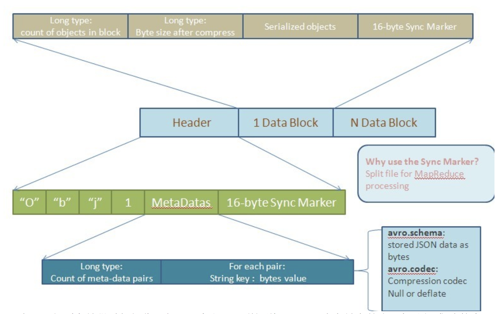
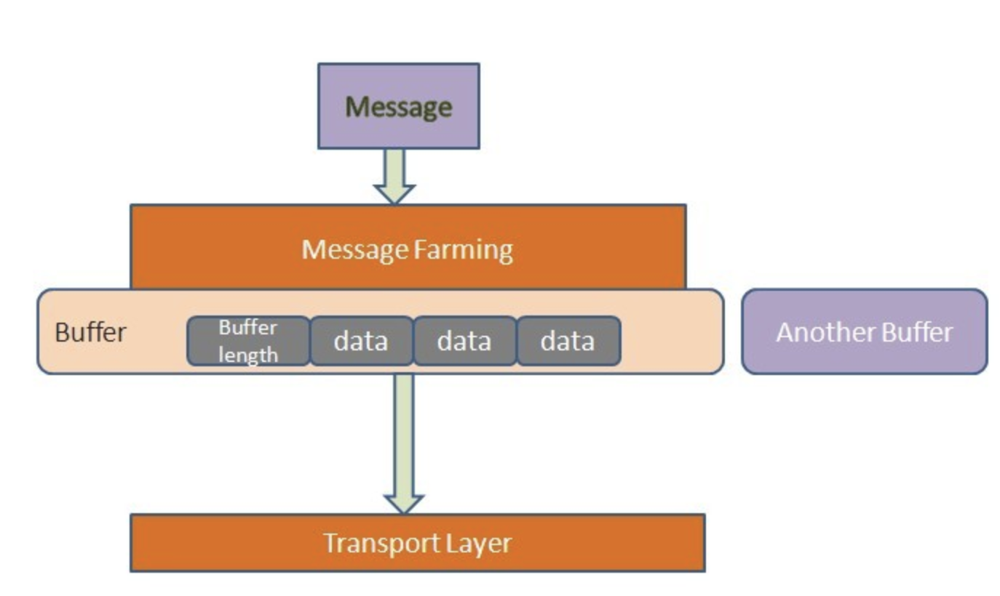

<!DOCTYPE html>
  <html>
    <head>
      <title>file</title>
      <meta charset="utf-8">
      <meta name="viewport" content="width=device-width, initial-scale=1.0">
      
      <link rel="stylesheet" href="file:////Users/vsber/.atom/packages/markdown-preview-enhanced/node_modules/@shd101wyy/mume/dependencies/katex/katex.min.css">
      
      
      
      
      
      
      
      
      

      <style> 
      /**
 * prism.js Github theme based on GitHub's theme.
 * @author Sam Clarke
 */
code[class*="language-"],
pre[class*="language-"] {
  color: #333;
  background: none;
  font-family: Consolas, "Liberation Mono", Menlo, Courier, monospace;
  text-align: left;
  white-space: pre;
  word-spacing: normal;
  word-break: normal;
  word-wrap: normal;
  line-height: 1.4;

  -moz-tab-size: 8;
  -o-tab-size: 8;
  tab-size: 8;

  -webkit-hyphens: none;
  -moz-hyphens: none;
  -ms-hyphens: none;
  hyphens: none;
}

/* Code blocks */
pre[class*="language-"] {
  padding: .8em;
  overflow: auto;
  /* border: 1px solid #ddd; */
  border-radius: 3px;
  /* background: #fff; */
  background: #f5f5f5;
}

/* Inline code */
:not(pre) > code[class*="language-"] {
  padding: .1em;
  border-radius: .3em;
  white-space: normal;
  background: #f5f5f5;
}

.token.comment,
.token.blockquote {
  color: #969896;
}

.token.cdata {
  color: #183691;
}

.token.doctype,
.token.punctuation,
.token.variable,
.token.macro.property {
  color: #333;
}

.token.operator,
.token.important,
.token.keyword,
.token.rule,
.token.builtin {
  color: #a71d5d;
}

.token.string,
.token.url,
.token.regex,
.token.attr-value {
  color: #183691;
}

.token.property,
.token.number,
.token.boolean,
.token.entity,
.token.atrule,
.token.constant,
.token.symbol,
.token.command,
.token.code {
  color: #0086b3;
}

.token.tag,
.token.selector,
.token.prolog {
  color: #63a35c;
}

.token.function,
.token.namespace,
.token.pseudo-element,
.token.class,
.token.class-name,
.token.pseudo-class,
.token.id,
.token.url-reference .token.variable,
.token.attr-name {
  color: #795da3;
}

.token.entity {
  cursor: help;
}

.token.title,
.token.title .token.punctuation {
  font-weight: bold;
  color: #1d3e81;
}

.token.list {
  color: #ed6a43;
}

.token.inserted {
  background-color: #eaffea;
  color: #55a532;
}

.token.deleted {
  background-color: #ffecec;
  color: #bd2c00;
}

.token.bold {
  font-weight: bold;
}

.token.italic {
  font-style: italic;
}


/* JSON */
.language-json .token.property {
  color: #183691;
}

.language-markup .token.tag .token.punctuation {
  color: #333;
}

/* CSS */
code.language-css,
.language-css .token.function {
  color: #0086b3;
}

/* YAML */
.language-yaml .token.atrule {
  color: #63a35c;
}

code.language-yaml {
  color: #183691;
}

/* Ruby */
.language-ruby .token.function {
  color: #333;
}

/* Markdown */
.language-markdown .token.url {
  color: #795da3;
}

/* Makefile */
.language-makefile .token.symbol {
  color: #795da3;
}

.language-makefile .token.variable {
  color: #183691;
}

.language-makefile .token.builtin {
  color: #0086b3;
}

/* Bash */
.language-bash .token.keyword {
  color: #0086b3;
}html body{font-family:"Helvetica Neue",Helvetica,"Segoe UI",Arial,freesans,sans-serif;font-size:16px;line-height:1.6;color:#333;background-color:#fff;overflow:initial;box-sizing:border-box;word-wrap:break-word}html body>:first-child{margin-top:0}html body h1,html body h2,html body h3,html body h4,html body h5,html body h6{line-height:1.2;margin-top:1em;margin-bottom:16px;color:#000}html body h1{font-size:2.25em;font-weight:300;padding-bottom:.3em}html body h2{font-size:1.75em;font-weight:400;padding-bottom:.3em}html body h3{font-size:1.5em;font-weight:500}html body h4{font-size:1.25em;font-weight:600}html body h5{font-size:1.1em;font-weight:600}html body h6{font-size:1em;font-weight:600}html body h1,html body h2,html body h3,html body h4,html body h5{font-weight:600}html body h5{font-size:1em}html body h6{color:#5c5c5c}html body strong{color:#000}html body del{color:#5c5c5c}html body a:not([href]){color:inherit;text-decoration:none}html body a{color:#08c;text-decoration:none}html body a:hover{color:#00a3f5;text-decoration:none}html body img{max-width:100%}html body>p{margin-top:0;margin-bottom:16px;word-wrap:break-word}html body>ul,html body>ol{margin-bottom:16px}html body ul,html body ol{padding-left:2em}html body ul.no-list,html body ol.no-list{padding:0;list-style-type:none}html body ul ul,html body ul ol,html body ol ol,html body ol ul{margin-top:0;margin-bottom:0}html body li{margin-bottom:0}html body li.task-list-item{list-style:none}html body li>p{margin-top:0;margin-bottom:0}html body .task-list-item-checkbox{margin:0 .2em .25em -1.8em;vertical-align:middle}html body .task-list-item-checkbox:hover{cursor:pointer}html body blockquote{margin:16px 0;font-size:inherit;padding:0 15px;color:#5c5c5c;border-left:4px solid #d6d6d6}html body blockquote>:first-child{margin-top:0}html body blockquote>:last-child{margin-bottom:0}html body hr{height:4px;margin:32px 0;background-color:#d6d6d6;border:0 none}html body table{margin:10px 0 15px 0;border-collapse:collapse;border-spacing:0;display:block;width:100%;overflow:auto;word-break:normal;word-break:keep-all}html body table th{font-weight:bold;color:#000}html body table td,html body table th{border:1px solid #d6d6d6;padding:6px 13px}html body dl{padding:0}html body dl dt{padding:0;margin-top:16px;font-size:1em;font-style:italic;font-weight:bold}html body dl dd{padding:0 16px;margin-bottom:16px}html body code{font-family:Menlo,Monaco,Consolas,'Courier New',monospace;font-size:.85em !important;color:#000;background-color:#f0f0f0;border-radius:3px;padding:.2em 0}html body code::before,html body code::after{letter-spacing:-0.2em;content:"\00a0"}html body pre>code{padding:0;margin:0;font-size:.85em !important;word-break:normal;white-space:pre;background:transparent;border:0}html body .highlight{margin-bottom:16px}html body .highlight pre,html body pre{padding:1em;overflow:auto;font-size:.85em !important;line-height:1.45;border:#d6d6d6;border-radius:3px}html body .highlight pre{margin-bottom:0;word-break:normal}html body pre code,html body pre tt{display:inline;max-width:initial;padding:0;margin:0;overflow:initial;line-height:inherit;word-wrap:normal;background-color:transparent;border:0}html body pre code:before,html body pre tt:before,html body pre code:after,html body pre tt:after{content:normal}html body p,html body blockquote,html body ul,html body ol,html body dl,html body pre{margin-top:0;margin-bottom:16px}html body kbd{color:#000;border:1px solid #d6d6d6;border-bottom:2px solid #c7c7c7;padding:2px 4px;background-color:#f0f0f0;border-radius:3px}@media print{html body{background-color:#fff}html body h1,html body h2,html body h3,html body h4,html body h5,html body h6{color:#000;page-break-after:avoid}html body blockquote{color:#5c5c5c}html body pre{page-break-inside:avoid}html body table{display:table}html body img{display:block;max-width:100%;max-height:100%}html body pre,html body code{word-wrap:break-word;white-space:pre}}.markdown-preview{width:100%;height:100%;box-sizing:border-box}.markdown-preview .pagebreak,.markdown-preview .newpage{page-break-before:always}.markdown-preview pre.line-numbers{position:relative;padding-left:3.8em;counter-reset:linenumber}.markdown-preview pre.line-numbers>code{position:relative}.markdown-preview pre.line-numbers .line-numbers-rows{position:absolute;pointer-events:none;top:1em;font-size:100%;left:0;width:3em;letter-spacing:-1px;border-right:1px solid #999;-webkit-user-select:none;-moz-user-select:none;-ms-user-select:none;user-select:none}.markdown-preview pre.line-numbers .line-numbers-rows>span{pointer-events:none;display:block;counter-increment:linenumber}.markdown-preview pre.line-numbers .line-numbers-rows>span:before{content:counter(linenumber);color:#999;display:block;padding-right:.8em;text-align:right}.markdown-preview .mathjax-exps .MathJax_Display{text-align:center !important}.markdown-preview:not([for="preview"]) .code-chunk .btn-group{display:none}.markdown-preview:not([for="preview"]) .code-chunk .status{display:none}.markdown-preview:not([for="preview"]) .code-chunk .output-div{margin-bottom:16px}.scrollbar-style::-webkit-scrollbar{width:8px}.scrollbar-style::-webkit-scrollbar-track{border-radius:10px;background-color:transparent}.scrollbar-style::-webkit-scrollbar-thumb{border-radius:5px;background-color:rgba(150,150,150,0.66);border:4px solid rgba(150,150,150,0.66);background-clip:content-box}html body[for="html-export"]:not([data-presentation-mode]){position:relative;width:100%;height:100%;top:0;left:0;margin:0;padding:0;overflow:auto}html body[for="html-export"]:not([data-presentation-mode]) .markdown-preview{position:relative;top:0}@media screen and (min-width:914px){html body[for="html-export"]:not([data-presentation-mode]) .markdown-preview{padding:2em calc(50% - 457px)}}@media screen and (max-width:914px){html body[for="html-export"]:not([data-presentation-mode]) .markdown-preview{padding:2em}}@media screen and (max-width:450px){html body[for="html-export"]:not([data-presentation-mode]) .markdown-preview{font-size:14px !important;padding:1em}}@media print{html body[for="html-export"]:not([data-presentation-mode]) #sidebar-toc-btn{display:none}}html body[for="html-export"]:not([data-presentation-mode]) #sidebar-toc-btn{position:fixed;bottom:8px;left:8px;font-size:28px;cursor:pointer;color:inherit;z-index:99;width:32px;text-align:center;opacity:.4}html body[for="html-export"]:not([data-presentation-mode])[html-show-sidebar-toc] #sidebar-toc-btn{opacity:1}html body[for="html-export"]:not([data-presentation-mode])[html-show-sidebar-toc] .md-sidebar-toc{position:fixed;top:0;left:0;width:300px;height:100%;padding:32px 0 48px 0;font-size:14px;box-shadow:0 0 4px rgba(150,150,150,0.33);box-sizing:border-box;overflow:auto;background-color:inherit}html body[for="html-export"]:not([data-presentation-mode])[html-show-sidebar-toc] .md-sidebar-toc::-webkit-scrollbar{width:8px}html body[for="html-export"]:not([data-presentation-mode])[html-show-sidebar-toc] .md-sidebar-toc::-webkit-scrollbar-track{border-radius:10px;background-color:transparent}html body[for="html-export"]:not([data-presentation-mode])[html-show-sidebar-toc] .md-sidebar-toc::-webkit-scrollbar-thumb{border-radius:5px;background-color:rgba(150,150,150,0.66);border:4px solid rgba(150,150,150,0.66);background-clip:content-box}html body[for="html-export"]:not([data-presentation-mode])[html-show-sidebar-toc] .md-sidebar-toc a{text-decoration:none}html body[for="html-export"]:not([data-presentation-mode])[html-show-sidebar-toc] .md-sidebar-toc ul{padding:0 1.6em;margin-top:.8em}html body[for="html-export"]:not([data-presentation-mode])[html-show-sidebar-toc] .md-sidebar-toc li{margin-bottom:.8em}html body[for="html-export"]:not([data-presentation-mode])[html-show-sidebar-toc] .md-sidebar-toc ul{list-style-type:none}html body[for="html-export"]:not([data-presentation-mode])[html-show-sidebar-toc] .markdown-preview{left:300px;width:calc(100% -  300px);padding:2em calc(50% - 457px -  150px);margin:0;box-sizing:border-box}@media screen and (max-width:1274px){html body[for="html-export"]:not([data-presentation-mode])[html-show-sidebar-toc] .markdown-preview{padding:2em}}@media screen and (max-width:450px){html body[for="html-export"]:not([data-presentation-mode])[html-show-sidebar-toc] .markdown-preview{width:100%}}html body[for="html-export"]:not([data-presentation-mode]):not([html-show-sidebar-toc]) .markdown-preview{left:50%;transform:translateX(-50%)}html body[for="html-export"]:not([data-presentation-mode]):not([html-show-sidebar-toc]) .md-sidebar-toc{display:none}
/* Please visit the URL below for more information: */
/*   https://shd101wyy.github.io/markdown-preview-enhanced/#/customize-css */
 
      </style>
    </head>
    <body for="html-export">
      <div class="mume markdown-preview   ">
      <p></p>
<h1 class="mume-header" id="apache-avro-%E5%B0%8F%E7%BB%93">Apache Avro 小结</h1>

<blockquote>
<p><a href="http://avro.apache.org/docs/current/index.html">Apache Avro™ 1.8.2 Overview</a><br>
<a href="http://avro.apache.org/docs/current/gettingstartedjava.html"> Apache Avro™ 1.8.2 Getting Started(Java)</a><br>
<a href="http://avro.apache.org/docs/current/spec.html">Apache Avro™ 1.8.2 Specification</a></p>
</blockquote>
<h2 class="mume-header" id="apache-avro-%E6%A6%82%E8%BF%B0">Apache Avro 概述</h2>

<p>avro是一个数据序列化系统。它提供了</p>
<ul>
<li>富数据结构</li>
<li>紧凑的、快捷的二进制数据格式</li>
<li>用于存储持久化数据的容器文件</li>
<li>提供了远程过程调用(Remote procedure call-PRC)</li>
<li>与动态语言简便的集成。读、写数据文件或者实现PRC协议都不需要生成代码。代码生成仅仅是一个用于优化的可选项，仅仅是为了静态类型语言而实现。</li>
</ul>
<p>Avro提供了和Thrift, Protocol Buffers序列化系统相类似的功能，不同之处如下。</p>
<ul>
<li>动态类型：Avro并不强制要求提前生成解析代码，而采取将数据和定义数据的schema同时存放的方式避免了使用提前生成的解析代码和静态类型定义等。这种便利性有利于构建通用数据处理系统和处理语言。</li>
<li>未打标签的数据：由于在读取数据时能够同时访问到该数据的schema，因此只需要将相当少的类型信息编码到数据中，结果就使得序列化之后的数据体积变得更小。</li>
<li>不存在手动分配的域ID：当schema改变之后，在处理相关数据时可以同时访问新老schema，因此新老数据的差异可以通过数据域的名字（field name ）很容易的解决（aliases）。</li>
</ul>
<h2 class="mume-header" id="apache-avro-specification%E6%80%BB%E7%BB%93">Apache Avro Specification总结</h2>

<h3 class="mume-header" id="schema-declaration">Schema Declaration</h3>

<blockquote>
<p>Avro是基于schema（模式），这和protobuf、thrift没什么区别，在schema文件中（.avsc文件）中声明数据类型，那么avro在read、write时将依据schema对数据进行序列化。因为有了schema，那么Avro的读、写操作将可以使用不同的平台语言。Avro的schema是JSON格式，所以编写起来也非常简单、可读性很好。avro schema 包括 Primitive Types 、Complex Types。</p>
</blockquote>
<h4 class="mume-header" id="a-schema-is-represented-in-json-by-one-of">A Schema is represented in JSON by one of:</h4>

<ul>
<li>A JSON string, naming a defined type.</li>
<li>A JSON object, of the form:<br>
{&quot;type&quot;: &quot;typeName&quot; ...attributes...}<br>
where typeName is either a primitive or derived type name, as defined below. Attributes not defined in this document are permitted as metadata, but must not affect the format of serialized data.<br>
*A JSON array, representing a union of embedded types.</li>
</ul>
<h4 class="mume-header" id="primitive-types">Primitive Types</h4>

<p>The set of primitive type names is:</p>
<ul>
<li><strong>null</strong>: no value</li>
<li><strong>boolean</strong>: a binary value</li>
<li><strong>int</strong>: 32-bit signed integer</li>
<li><strong>long</strong>: 64-bit signed integer</li>
<li><strong>float</strong>: single precision (32-bit) IEEE 754 floating-point number</li>
<li><strong>double</strong>: double precision (64-bit) IEEE 754 floating-point number</li>
<li><strong>bytes</strong>: sequence of 8-bit unsigned bytes</li>
<li><strong>string</strong>: unicode character sequence<br>
Primitive types have no specified attributes.</li>
</ul>
<p>Primitive type names are also defined type names. Thus, for example, the schema &quot;string&quot; is equivalent to:<br>
<code>{&quot;type&quot;: &quot;string&quot;}</code></p>
<h4 class="mume-header" id="complex-types">Complex Types</h4>

<p>Avro supports six kinds of complex types: <strong>records</strong>, <strong>enums</strong>, <strong>arrays</strong>, <strong>maps</strong>, <strong>unions</strong> and <strong>fixed</strong>.</p>
<h3 class="mume-header" id="data-serialization">Data Serialization</h3>

<p>数据保存为文件或者rpc传输都需要根据schema进行序列化，保存为文件时schema保存在文件中为反序列化提供支持。rpc传输数据时，通过握手过程对客户端和服务端两边的protocol进行hash一致性校验，完成匹配后对请求或响应结果根据数据对应的schema进行序列化之后传输</p>
<p>序列化过程中通过对数据编码，编码有<strong>Binary Encoding</strong>和<strong>JSON Encoding</strong>两种，但是avro rpc过程编码目前指看到 <strong>Binary Encoding</strong>方式。反序列与之对应。</p>
<h3 class="mume-header" id="object-container-files">Object Container Files</h3>

<p>Avro includes a simple object container file format. A file has a schema, and all objects stored in the file must be written according to that schema, using binary encoding. Objects are stored in blocks that may be compressed. Syncronization markers are used between blocks to permit efficient splitting of files for MapReduce processing.<br>
avro 也引入了简单对象容器文件格式(simple object container file format)，二进制编码的形式写入。对象在文件中以块(Block)来组织，并且这些对象都是可以被压缩的。块和块之间会存在同步标记符(Synchronization Marker)，以便MapReduce方便地切割文件用于处理。下图是文件结构图：<br>
<br>
上图已经对各块做肢解操作，但还是有必要再详细说明下。一个存储文件由两部分组成:头信息(Header)和数据块(Data Block)。而头信息又由三部分构成：四个字节的前缀(类似于Magic Number)，文件Meta-data信息和随机生成的16字节同步标记符。这里的Meta-data信息让人有些疑惑，它除了文件的模式外，还能包含什么。文档中指出当前Avro认定的就两个Meta-data：schema和codec。这里的codec表示对后面的文件数据块(File Data Block)采用何种压缩方式。Avro的实现都需要支持下面两种压缩方式：null(不压缩)和deflate(使用Deflate算法压缩数据块)。除了文档中认定的两种Meta-data，用户还可以自定义适用于自己的Meta-data。这里用long型来表示有多少个Meta-data数据对，也是让用户在实际应用中可以定义足够的Meta-data信息。对于每对Meta-data信息，都有一个string型的key(需要以“avro.”为前缀)和二进制编码后的value。对于文件中头信息之后的每个数据块，有这样的结构：一个long值记录当前块有多少个对象，一个long值用于记录当前块经过压缩后的字节数，真正的序列化对象和16字节长度的同步标记符。由于对象可以组织成不同的块，使用时就可以不经过反序列化而对某个数据块进行操作。还可以由数据块数，对象数和同步标记符来定位损坏的块以确保数据完整性。</p>
<h3 class="mume-header" id="protocol-declaration">Protocol Declaration</h3>

<p>Avro protocols describe RPC interfaces. Like schemas, they are defined with JSON text.</p>
<p>A protocol is a JSON object with the following attributes:</p>
<ul>
<li><strong>protocol</strong>, a string, the name of the protocol (required);</li>
<li><strong>namespace</strong>, an optional string that qualifies the name;</li>
<li><strong>doc</strong>, an optional string describing this protocol;</li>
<li><strong>types</strong>, an optional list of definitions of named types (records, enums, fixed and errors). An error definition is just like a record definition except it uses &quot;error&quot; instead of &quot;record&quot;. Note that forward references to named types are not permitted.</li>
<li><strong>messages</strong>, an optional JSON object whose keys are message names and whose values are objects whose attributes are described below. No two messages may have the same name.<br>
The name and namespace qualification rules defined for schema objects apply to protocols as well.</li>
</ul>
<h4 class="mume-header" id="messages">Messages</h4>

<p>A message has attributes:</p>
<ul>
<li>a <strong>doc</strong>, an optional description of the message,</li>
<li>a <strong>request</strong>, a list of named, typed parameter schemas (this has the same form as the fields of a record declaration);<br>
a response schema;</li>
<li>an optional union of declared <strong>error</strong> schemas. The effective union has &quot;string&quot; prepended to the declared union, to permit transmission of undeclared &quot;system&quot; errors. For example, if the declared error union is [&quot;AccessError&quot;], then the effective union is [&quot;string&quot;, &quot;AccessError&quot;]. When no errors are declared, the effective error union is [&quot;string&quot;]. Errors are serialized using the effective union; however, a protocol's JSON declaration contains only the declared union.</li>
<li>an optional <strong>one-way</strong> boolean parameter.</li>
<li>A <strong>request</strong> parameter list is processed equivalently to an anonymous record. Since record field lists may vary between reader and writer, request parameters may also differ between the caller and responder, and such differences are resolved in the same manner as record field differences.</li>
</ul>
<p>The one-way parameter may only be true when the response type is &quot;null&quot; and no errors are listed.</p>
<h4 class="mume-header" id="sample-protocol">Sample Protocol</h4>

<p>For example, one may define a simple HelloWorld protocol with:</p>
<pre class="language-json"><span class="token punctuation">{</span>
  <span class="token property">"namespace"</span><span class="token operator">:</span> <span class="token string">"com.acme"</span><span class="token punctuation">,</span>
  <span class="token property">"protocol"</span><span class="token operator">:</span> <span class="token string">"HelloWorld"</span><span class="token punctuation">,</span>
  <span class="token property">"doc"</span><span class="token operator">:</span> <span class="token string">"Protocol Greetings"</span><span class="token punctuation">,</span>

  <span class="token property">"types"</span><span class="token operator">:</span> <span class="token punctuation">[</span>
    <span class="token punctuation">{</span><span class="token property">"name"</span><span class="token operator">:</span> <span class="token string">"Greeting"</span><span class="token punctuation">,</span> <span class="token property">"type"</span><span class="token operator">:</span> <span class="token string">"record"</span><span class="token punctuation">,</span> <span class="token property">"fields"</span><span class="token operator">:</span> <span class="token punctuation">[</span>
      <span class="token punctuation">{</span><span class="token property">"name"</span><span class="token operator">:</span> <span class="token string">"message"</span><span class="token punctuation">,</span> <span class="token property">"type"</span><span class="token operator">:</span> <span class="token string">"string"</span><span class="token punctuation">}</span><span class="token punctuation">]</span><span class="token punctuation">}</span><span class="token punctuation">,</span>
    <span class="token punctuation">{</span><span class="token property">"name"</span><span class="token operator">:</span> <span class="token string">"Curse"</span><span class="token punctuation">,</span> <span class="token property">"type"</span><span class="token operator">:</span> <span class="token string">"error"</span><span class="token punctuation">,</span> <span class="token property">"fields"</span><span class="token operator">:</span> <span class="token punctuation">[</span>
      <span class="token punctuation">{</span><span class="token property">"name"</span><span class="token operator">:</span> <span class="token string">"message"</span><span class="token punctuation">,</span> <span class="token property">"type"</span><span class="token operator">:</span> <span class="token string">"string"</span><span class="token punctuation">}</span><span class="token punctuation">]</span><span class="token punctuation">}</span>
  <span class="token punctuation">]</span><span class="token punctuation">,</span>

  <span class="token property">"messages"</span><span class="token operator">:</span> <span class="token punctuation">{</span>
    <span class="token property">"hello"</span><span class="token operator">:</span> <span class="token punctuation">{</span>
      <span class="token property">"doc"</span><span class="token operator">:</span> <span class="token string">"Say hello."</span><span class="token punctuation">,</span>
      <span class="token property">"request"</span><span class="token operator">:</span> <span class="token punctuation">[</span><span class="token punctuation">{</span><span class="token property">"name"</span><span class="token operator">:</span> <span class="token string">"greeting"</span><span class="token punctuation">,</span> <span class="token property">"type"</span><span class="token operator">:</span> <span class="token string">"Greeting"</span> <span class="token punctuation">}</span><span class="token punctuation">]</span><span class="token punctuation">,</span>
      <span class="token property">"response"</span><span class="token operator">:</span> <span class="token string">"Greeting"</span><span class="token punctuation">,</span>
      <span class="token property">"errors"</span><span class="token operator">:</span> <span class="token punctuation">[</span><span class="token string">"Curse"</span><span class="token punctuation">]</span>
    <span class="token punctuation">}</span>
  <span class="token punctuation">}</span>
<span class="token punctuation">}</span>
</pre><h3 class="mume-header" id="protocol-wire-format">Protocol Wire Format</h3>

<h4 class="mume-header" id="message-transport">Message Transport</h4>

<p>消息传输，最终以字节形式传输，包括请求和响应<br>
传输机制有多种分为有状态的和无状态的，如 http sock netty 等<br>
http 传输，使用post 方式、二进制编码 无状态传输</p>
<h4 class="mume-header" id="message-framing">Message Framing</h4>

<p>在Avro中，它的消息被封装成为一组缓冲区(Buffer)，类似于下图的模型<br>
<br>
如上图，每个缓冲区以四个字节开头，中间是多个字节的缓冲数据，最后以一个空缓冲区结尾。这种机制的好处在于，发送端在发送数据时可以很方便地组装不同数据源的数据，接收方也可以将数据存入不同的存储区。还有，当往缓冲区中写数据时，大对象可以独占一个缓冲区，而不是与其它小对象混合存放，便于接收方方便地读取大对象。</p>
<h4 class="mume-header" id="handshake">Handshake</h4>

<p>avro使用握手判断两边使用的avro protocol一致，进而双方进行交互。客户端发送<code>HandShakeRequest</code>，服务端根据请求中携带的hash值进行校验响应后返回对应的<code>HandsHakeResponse</code>,客户端对<code>HandsHakeResponse</code>校验是否匹配。<br>
不匹配进行重新握手，匹配则解析对应返回内容。<br>
有状态传输，只进行开始的握手，无状态传输每次请求都需要进行握手。<br>
The handshake process uses the following record schemas:</p>
<pre class="language-json"><span class="token punctuation">{</span>
  <span class="token property">"type"</span><span class="token operator">:</span> <span class="token string">"record"</span><span class="token punctuation">,</span>
  <span class="token property">"name"</span><span class="token operator">:</span> <span class="token string">"HandshakeRequest"</span><span class="token punctuation">,</span> <span class="token property">"namespace"</span><span class="token operator">:</span><span class="token string">"org.apache.avro.ipc"</span><span class="token punctuation">,</span>
  <span class="token property">"fields"</span><span class="token operator">:</span> <span class="token punctuation">[</span>
    <span class="token punctuation">{</span><span class="token property">"name"</span><span class="token operator">:</span> <span class="token string">"clientHash"</span><span class="token punctuation">,</span>
     <span class="token property">"type"</span><span class="token operator">:</span> <span class="token punctuation">{</span><span class="token property">"type"</span><span class="token operator">:</span> <span class="token string">"fixed"</span><span class="token punctuation">,</span> <span class="token property">"name"</span><span class="token operator">:</span> <span class="token string">"MD5"</span><span class="token punctuation">,</span> <span class="token property">"size"</span><span class="token operator">:</span> <span class="token number">16</span><span class="token punctuation">}</span><span class="token punctuation">}</span><span class="token punctuation">,</span>
    <span class="token punctuation">{</span><span class="token property">"name"</span><span class="token operator">:</span> <span class="token string">"clientProtocol"</span><span class="token punctuation">,</span> <span class="token property">"type"</span><span class="token operator">:</span> <span class="token punctuation">[</span><span class="token string">"null"</span><span class="token punctuation">,</span> <span class="token string">"string"</span><span class="token punctuation">]</span><span class="token punctuation">}</span><span class="token punctuation">,</span>
    <span class="token punctuation">{</span><span class="token property">"name"</span><span class="token operator">:</span> <span class="token string">"serverHash"</span><span class="token punctuation">,</span> <span class="token property">"type"</span><span class="token operator">:</span> <span class="token string">"MD5"</span><span class="token punctuation">}</span><span class="token punctuation">,</span>
    <span class="token punctuation">{</span><span class="token property">"name"</span><span class="token operator">:</span> <span class="token string">"meta"</span><span class="token punctuation">,</span> <span class="token property">"type"</span><span class="token operator">:</span> <span class="token punctuation">[</span><span class="token string">"null"</span><span class="token punctuation">,</span> <span class="token punctuation">{</span><span class="token property">"type"</span><span class="token operator">:</span> <span class="token string">"map"</span><span class="token punctuation">,</span> <span class="token property">"values"</span><span class="token operator">:</span> <span class="token string">"bytes"</span><span class="token punctuation">}</span><span class="token punctuation">]</span><span class="token punctuation">}</span>
  <span class="token punctuation">]</span>
<span class="token punctuation">}</span>
<span class="token punctuation">{</span>
  <span class="token property">"type"</span><span class="token operator">:</span> <span class="token string">"record"</span><span class="token punctuation">,</span>
  <span class="token property">"name"</span><span class="token operator">:</span> <span class="token string">"HandshakeResponse"</span><span class="token punctuation">,</span> <span class="token property">"namespace"</span><span class="token operator">:</span> <span class="token string">"org.apache.avro.ipc"</span><span class="token punctuation">,</span>
  <span class="token property">"fields"</span><span class="token operator">:</span> <span class="token punctuation">[</span>
    <span class="token punctuation">{</span><span class="token property">"name"</span><span class="token operator">:</span> <span class="token string">"match"</span><span class="token punctuation">,</span>
     <span class="token property">"type"</span><span class="token operator">:</span> <span class="token punctuation">{</span><span class="token property">"type"</span><span class="token operator">:</span> <span class="token string">"enum"</span><span class="token punctuation">,</span> <span class="token property">"name"</span><span class="token operator">:</span> <span class="token string">"HandshakeMatch"</span><span class="token punctuation">,</span>
              <span class="token property">"symbols"</span><span class="token operator">:</span> <span class="token punctuation">[</span><span class="token string">"BOTH"</span><span class="token punctuation">,</span> <span class="token string">"CLIENT"</span><span class="token punctuation">,</span> <span class="token string">"NONE"</span><span class="token punctuation">]</span><span class="token punctuation">}</span><span class="token punctuation">}</span><span class="token punctuation">,</span>
    <span class="token punctuation">{</span><span class="token property">"name"</span><span class="token operator">:</span> <span class="token string">"serverProtocol"</span><span class="token punctuation">,</span>
     <span class="token property">"type"</span><span class="token operator">:</span> <span class="token punctuation">[</span><span class="token string">"null"</span><span class="token punctuation">,</span> <span class="token string">"string"</span><span class="token punctuation">]</span><span class="token punctuation">}</span><span class="token punctuation">,</span>
    <span class="token punctuation">{</span><span class="token property">"name"</span><span class="token operator">:</span> <span class="token string">"serverHash"</span><span class="token punctuation">,</span>
     <span class="token property">"type"</span><span class="token operator">:</span> <span class="token punctuation">[</span><span class="token string">"null"</span><span class="token punctuation">,</span> <span class="token punctuation">{</span><span class="token property">"type"</span><span class="token operator">:</span> <span class="token string">"fixed"</span><span class="token punctuation">,</span> <span class="token property">"name"</span><span class="token operator">:</span> <span class="token string">"MD5"</span><span class="token punctuation">,</span> <span class="token property">"size"</span><span class="token operator">:</span> <span class="token number">16</span><span class="token punctuation">}</span><span class="token punctuation">]</span><span class="token punctuation">}</span><span class="token punctuation">,</span>
    <span class="token punctuation">{</span><span class="token property">"name"</span><span class="token operator">:</span> <span class="token string">"meta"</span><span class="token punctuation">,</span>
     <span class="token property">"type"</span><span class="token operator">:</span> <span class="token punctuation">[</span><span class="token string">"null"</span><span class="token punctuation">,</span> <span class="token punctuation">{</span><span class="token property">"type"</span><span class="token operator">:</span> <span class="token string">"map"</span><span class="token punctuation">,</span> <span class="token property">"values"</span><span class="token operator">:</span> <span class="token string">"bytes"</span><span class="token punctuation">}</span><span class="token punctuation">]</span><span class="token punctuation">}</span>
  <span class="token punctuation">]</span>
<span class="token punctuation">}</span>
</pre><h4 class="mume-header" id="call-format">Call Format</h4>

<p>调用的格式包括<br>
The format of a call request is:</p>
<ul>
<li>request <strong>metadata</strong>, a map with values of type bytes</li>
<li>the <strong>message name</strong>, an Avro string, followed by</li>
<li>the <strong>message parameters</strong>. Parameters are serialized according to the message's request declaration.<br>
When the empty string is used as a message name a server should ignore the parameters and return an empty response. A client may use this to ping a server or to perform a handshake without sending a protocol message.</li>
</ul>
<p>When a message is declared one-way and a stateful connection has been established by a successful handshake response, no response data is sent. Otherwise the format of the call response is:</p>
<ul>
<li>response <strong>metadata</strong>, a map with values of type bytes</li>
<li>a one-byte <strong>error flag</strong> boolean, followed by either:<br>
if the error flag is false, the message response, serialized per the message's response schema.<br>
if the error flag is true, the error, serialized per the message's effective error union schema.</li>
</ul>
<h5 class="mume-header" id="call-request">call request</h5>

<p>请求avro源代码片段,<code>org.apache.avro.ipc.Requestor</code>中的<code>getBytes</code><br>
<strong>request metadata</strong> 对应 <code>META_WRITER.write(context.requestCallMeta(), out);</code><br>
<strong>message name</strong> 对应   <code>out.writeString(m.getName());</code><br>
<strong>message parameters</strong>对应 <code>writeRequest(m.getRequest(), request, out);</code></p>
<pre class="language-java"><span class="token keyword">public</span> List<span class="token operator">&lt;</span>ByteBuffer<span class="token operator">></span> <span class="token function">getBytes</span><span class="token punctuation">(</span><span class="token punctuation">)</span>
     <span class="token keyword">throws</span> Exception <span class="token punctuation">{</span>
     <span class="token keyword">if</span> <span class="token punctuation">(</span>requestBytes <span class="token operator">==</span> null<span class="token punctuation">)</span> <span class="token punctuation">{</span>
       ByteBufferOutputStream bbo <span class="token operator">=</span> <span class="token keyword">new</span> <span class="token class-name">ByteBufferOutputStream</span><span class="token punctuation">(</span><span class="token punctuation">)</span><span class="token punctuation">;</span>
       BinaryEncoder out <span class="token operator">=</span> ENCODER_FACTORY<span class="token punctuation">.</span><span class="token function">binaryEncoder</span><span class="token punctuation">(</span>bbo<span class="token punctuation">,</span> encoder<span class="token punctuation">)</span><span class="token punctuation">;</span>

       <span class="token comment" spellcheck="true">// use local protocol to write request</span>
       Message m <span class="token operator">=</span> <span class="token function">getMessage</span><span class="token punctuation">(</span><span class="token punctuation">)</span><span class="token punctuation">;</span>
       context<span class="token punctuation">.</span><span class="token function">setMessage</span><span class="token punctuation">(</span>m<span class="token punctuation">)</span><span class="token punctuation">;</span>

       <span class="token function">writeRequest</span><span class="token punctuation">(</span>m<span class="token punctuation">.</span><span class="token function">getRequest</span><span class="token punctuation">(</span><span class="token punctuation">)</span><span class="token punctuation">,</span> request<span class="token punctuation">,</span> out<span class="token punctuation">)</span><span class="token punctuation">;</span> <span class="token comment" spellcheck="true">// write request payload</span>

       out<span class="token punctuation">.</span><span class="token function">flush</span><span class="token punctuation">(</span><span class="token punctuation">)</span><span class="token punctuation">;</span>
       List<span class="token operator">&lt;</span>ByteBuffer<span class="token operator">></span> payload <span class="token operator">=</span> bbo<span class="token punctuation">.</span><span class="token function">getBufferList</span><span class="token punctuation">(</span><span class="token punctuation">)</span><span class="token punctuation">;</span>

       <span class="token function">writeHandshake</span><span class="token punctuation">(</span>out<span class="token punctuation">)</span><span class="token punctuation">;</span>                     <span class="token comment" spellcheck="true">// prepend handshake if needed</span>

       context<span class="token punctuation">.</span><span class="token function">setRequestPayload</span><span class="token punctuation">(</span>payload<span class="token punctuation">)</span><span class="token punctuation">;</span>
       <span class="token keyword">for</span> <span class="token punctuation">(</span>RPCPlugin plugin <span class="token operator">:</span> rpcMetaPlugins<span class="token punctuation">)</span> <span class="token punctuation">{</span>
         plugin<span class="token punctuation">.</span><span class="token function">clientSendRequest</span><span class="token punctuation">(</span>context<span class="token punctuation">)</span><span class="token punctuation">;</span>      <span class="token comment" spellcheck="true">// get meta-data from plugins</span>
       <span class="token punctuation">}</span>
       META_WRITER<span class="token punctuation">.</span><span class="token function">write</span><span class="token punctuation">(</span>context<span class="token punctuation">.</span><span class="token function">requestCallMeta</span><span class="token punctuation">(</span><span class="token punctuation">)</span><span class="token punctuation">,</span> out<span class="token punctuation">)</span><span class="token punctuation">;</span>

       out<span class="token punctuation">.</span><span class="token function">writeString</span><span class="token punctuation">(</span>m<span class="token punctuation">.</span><span class="token function">getName</span><span class="token punctuation">(</span><span class="token punctuation">)</span><span class="token punctuation">)</span><span class="token punctuation">;</span>             <span class="token comment" spellcheck="true">// write message name</span>

       out<span class="token punctuation">.</span><span class="token function">flush</span><span class="token punctuation">(</span><span class="token punctuation">)</span><span class="token punctuation">;</span>
       bbo<span class="token punctuation">.</span><span class="token function">append</span><span class="token punctuation">(</span>payload<span class="token punctuation">)</span><span class="token punctuation">;</span>

       requestBytes <span class="token operator">=</span> bbo<span class="token punctuation">.</span><span class="token function">getBufferList</span><span class="token punctuation">(</span><span class="token punctuation">)</span><span class="token punctuation">;</span>
     <span class="token punctuation">}</span>
     <span class="token keyword">return</span> requestBytes<span class="token punctuation">;</span>
   <span class="token punctuation">}</span>
</pre><h5 class="mume-header" id="response">response</h5>

<p>server响应 avro源代码片段<code>org.apache.avro.ipc.Responder</code>中的<code>respond</code><br>
其中结尾代码片段：</p>
<pre class="language-java">META_WRITER<span class="token punctuation">.</span><span class="token function">write</span><span class="token punctuation">(</span>context<span class="token punctuation">.</span><span class="token function">responseCallMeta</span><span class="token punctuation">(</span><span class="token punctuation">)</span><span class="token punctuation">,</span> out<span class="token punctuation">)</span><span class="token punctuation">;</span>
out<span class="token punctuation">.</span><span class="token function">flush</span><span class="token punctuation">(</span><span class="token punctuation">)</span><span class="token punctuation">;</span>
<span class="token comment" spellcheck="true">// Prepend handshake and append payload</span>
bbo<span class="token punctuation">.</span><span class="token function">prepend</span><span class="token punctuation">(</span>handshake<span class="token punctuation">)</span><span class="token punctuation">;</span>
bbo<span class="token punctuation">.</span><span class="token function">append</span><span class="token punctuation">(</span>payload<span class="token punctuation">)</span><span class="token punctuation">;</span>
</pre><p>表明了响应的结果buffer顺序依次为<strong>meta</strong>、<strong>handshake</strong>、<strong>payload</strong>（“response”）</p>
<pre class="language-java"><span class="token comment" spellcheck="true">/** Called by a server to deserialize a request, compute and serialize a
 * response or error.  Transciever is used by connection-based servers to
 * track handshake status of connection. */</span>
<span class="token keyword">public</span> List<span class="token operator">&lt;</span>ByteBuffer<span class="token operator">></span> <span class="token function">respond</span><span class="token punctuation">(</span>List<span class="token operator">&lt;</span>ByteBuffer<span class="token operator">></span> buffers<span class="token punctuation">,</span>
                                Transceiver connection<span class="token punctuation">)</span> <span class="token keyword">throws</span> IOException <span class="token punctuation">{</span>
  Decoder in <span class="token operator">=</span> DecoderFactory<span class="token punctuation">.</span><span class="token function">get</span><span class="token punctuation">(</span><span class="token punctuation">)</span><span class="token punctuation">.</span><span class="token function">binaryDecoder</span><span class="token punctuation">(</span>
      <span class="token keyword">new</span> <span class="token class-name">ByteBufferInputStream</span><span class="token punctuation">(</span>buffers<span class="token punctuation">)</span><span class="token punctuation">,</span> null<span class="token punctuation">)</span><span class="token punctuation">;</span>
  ByteBufferOutputStream bbo <span class="token operator">=</span> <span class="token keyword">new</span> <span class="token class-name">ByteBufferOutputStream</span><span class="token punctuation">(</span><span class="token punctuation">)</span><span class="token punctuation">;</span>
  BinaryEncoder out <span class="token operator">=</span> EncoderFactory<span class="token punctuation">.</span><span class="token function">get</span><span class="token punctuation">(</span><span class="token punctuation">)</span><span class="token punctuation">.</span><span class="token function">binaryEncoder</span><span class="token punctuation">(</span>bbo<span class="token punctuation">,</span> null<span class="token punctuation">)</span><span class="token punctuation">;</span>
  Exception error <span class="token operator">=</span> null<span class="token punctuation">;</span>
  RPCContext context <span class="token operator">=</span> <span class="token keyword">new</span> <span class="token class-name">RPCContext</span><span class="token punctuation">(</span><span class="token punctuation">)</span><span class="token punctuation">;</span>
  List<span class="token operator">&lt;</span>ByteBuffer<span class="token operator">></span> payload <span class="token operator">=</span> null<span class="token punctuation">;</span>
  List<span class="token operator">&lt;</span>ByteBuffer<span class="token operator">></span> handshake <span class="token operator">=</span> null<span class="token punctuation">;</span>
  <span class="token keyword">boolean</span> wasConnected <span class="token operator">=</span> connection <span class="token operator">!=</span> null <span class="token operator">&amp;&amp;</span> connection<span class="token punctuation">.</span><span class="token function">isConnected</span><span class="token punctuation">(</span><span class="token punctuation">)</span><span class="token punctuation">;</span>
  <span class="token keyword">try</span> <span class="token punctuation">{</span>
    Protocol remote <span class="token operator">=</span> <span class="token function">handshake</span><span class="token punctuation">(</span>in<span class="token punctuation">,</span> out<span class="token punctuation">,</span> connection<span class="token punctuation">)</span><span class="token punctuation">;</span>
    out<span class="token punctuation">.</span><span class="token function">flush</span><span class="token punctuation">(</span><span class="token punctuation">)</span><span class="token punctuation">;</span>
    <span class="token keyword">if</span> <span class="token punctuation">(</span>remote <span class="token operator">==</span> null<span class="token punctuation">)</span>                        <span class="token comment" spellcheck="true">// handshake failed</span>
      <span class="token keyword">return</span> bbo<span class="token punctuation">.</span><span class="token function">getBufferList</span><span class="token punctuation">(</span><span class="token punctuation">)</span><span class="token punctuation">;</span>
    handshake <span class="token operator">=</span> bbo<span class="token punctuation">.</span><span class="token function">getBufferList</span><span class="token punctuation">(</span><span class="token punctuation">)</span><span class="token punctuation">;</span>

    <span class="token comment" spellcheck="true">// read request using remote protocol specification</span>
    context<span class="token punctuation">.</span><span class="token function">setRequestCallMeta</span><span class="token punctuation">(</span>META_READER<span class="token punctuation">.</span><span class="token function">read</span><span class="token punctuation">(</span>null<span class="token punctuation">,</span> in<span class="token punctuation">)</span><span class="token punctuation">)</span><span class="token punctuation">;</span>
    String messageName <span class="token operator">=</span> in<span class="token punctuation">.</span><span class="token function">readString</span><span class="token punctuation">(</span>null<span class="token punctuation">)</span><span class="token punctuation">.</span><span class="token function">toString</span><span class="token punctuation">(</span><span class="token punctuation">)</span><span class="token punctuation">;</span>
    <span class="token keyword">if</span> <span class="token punctuation">(</span>messageName<span class="token punctuation">.</span><span class="token function">equals</span><span class="token punctuation">(</span><span class="token string">""</span><span class="token punctuation">)</span><span class="token punctuation">)</span>                 <span class="token comment" spellcheck="true">// a handshake ping</span>
      <span class="token keyword">return</span> handshake<span class="token punctuation">;</span>
    Message rm <span class="token operator">=</span> remote<span class="token punctuation">.</span><span class="token function">getMessages</span><span class="token punctuation">(</span><span class="token punctuation">)</span><span class="token punctuation">.</span><span class="token function">get</span><span class="token punctuation">(</span>messageName<span class="token punctuation">)</span><span class="token punctuation">;</span>
    <span class="token keyword">if</span> <span class="token punctuation">(</span>rm <span class="token operator">==</span> null<span class="token punctuation">)</span>
      <span class="token keyword">throw</span> <span class="token keyword">new</span> <span class="token class-name">AvroRuntimeException</span><span class="token punctuation">(</span><span class="token string">"No such remote message: "</span><span class="token operator">+</span>messageName<span class="token punctuation">)</span><span class="token punctuation">;</span>
    Message m <span class="token operator">=</span> <span class="token function">getLocal</span><span class="token punctuation">(</span><span class="token punctuation">)</span><span class="token punctuation">.</span><span class="token function">getMessages</span><span class="token punctuation">(</span><span class="token punctuation">)</span><span class="token punctuation">.</span><span class="token function">get</span><span class="token punctuation">(</span>messageName<span class="token punctuation">)</span><span class="token punctuation">;</span>
    <span class="token keyword">if</span> <span class="token punctuation">(</span>m <span class="token operator">==</span> null<span class="token punctuation">)</span>
      <span class="token keyword">throw</span> <span class="token keyword">new</span> <span class="token class-name">AvroRuntimeException</span><span class="token punctuation">(</span><span class="token string">"No message named "</span><span class="token operator">+</span>messageName
                                     <span class="token operator">+</span><span class="token string">" in "</span><span class="token operator">+</span><span class="token function">getLocal</span><span class="token punctuation">(</span><span class="token punctuation">)</span><span class="token punctuation">)</span><span class="token punctuation">;</span>

    Object request <span class="token operator">=</span> <span class="token function">readRequest</span><span class="token punctuation">(</span>rm<span class="token punctuation">.</span><span class="token function">getRequest</span><span class="token punctuation">(</span><span class="token punctuation">)</span><span class="token punctuation">,</span> m<span class="token punctuation">.</span><span class="token function">getRequest</span><span class="token punctuation">(</span><span class="token punctuation">)</span><span class="token punctuation">,</span> in<span class="token punctuation">)</span><span class="token punctuation">;</span>

    context<span class="token punctuation">.</span><span class="token function">setMessage</span><span class="token punctuation">(</span>rm<span class="token punctuation">)</span><span class="token punctuation">;</span>
    <span class="token keyword">for</span> <span class="token punctuation">(</span>RPCPlugin plugin <span class="token operator">:</span> rpcMetaPlugins<span class="token punctuation">)</span> <span class="token punctuation">{</span>
      plugin<span class="token punctuation">.</span><span class="token function">serverReceiveRequest</span><span class="token punctuation">(</span>context<span class="token punctuation">)</span><span class="token punctuation">;</span>
    <span class="token punctuation">}</span>

    <span class="token comment" spellcheck="true">// create response using local protocol specification</span>
    <span class="token keyword">if</span> <span class="token punctuation">(</span><span class="token punctuation">(</span>m<span class="token punctuation">.</span><span class="token function">isOneWay</span><span class="token punctuation">(</span><span class="token punctuation">)</span> <span class="token operator">!=</span> rm<span class="token punctuation">.</span><span class="token function">isOneWay</span><span class="token punctuation">(</span><span class="token punctuation">)</span><span class="token punctuation">)</span> <span class="token operator">&amp;&amp;</span> wasConnected<span class="token punctuation">)</span>
      <span class="token keyword">throw</span> <span class="token keyword">new</span> <span class="token class-name">AvroRuntimeException</span><span class="token punctuation">(</span><span class="token string">"Not both one-way: "</span><span class="token operator">+</span>messageName<span class="token punctuation">)</span><span class="token punctuation">;</span>

    Object response <span class="token operator">=</span> null<span class="token punctuation">;</span>

    <span class="token keyword">try</span> <span class="token punctuation">{</span>
      REMOTE<span class="token punctuation">.</span><span class="token function">set</span><span class="token punctuation">(</span>remote<span class="token punctuation">)</span><span class="token punctuation">;</span>
      response <span class="token operator">=</span> <span class="token function">respond</span><span class="token punctuation">(</span>m<span class="token punctuation">,</span> request<span class="token punctuation">)</span><span class="token punctuation">;</span>
      context<span class="token punctuation">.</span><span class="token function">setResponse</span><span class="token punctuation">(</span>response<span class="token punctuation">)</span><span class="token punctuation">;</span>
    <span class="token punctuation">}</span> <span class="token keyword">catch</span> <span class="token punctuation">(</span><span class="token class-name">Exception</span> e<span class="token punctuation">)</span> <span class="token punctuation">{</span>
      error <span class="token operator">=</span> e<span class="token punctuation">;</span>
      context<span class="token punctuation">.</span><span class="token function">setError</span><span class="token punctuation">(</span>error<span class="token punctuation">)</span><span class="token punctuation">;</span>
      LOG<span class="token punctuation">.</span><span class="token function">warn</span><span class="token punctuation">(</span><span class="token string">"user error"</span><span class="token punctuation">,</span> e<span class="token punctuation">)</span><span class="token punctuation">;</span>
    <span class="token punctuation">}</span> <span class="token keyword">finally</span> <span class="token punctuation">{</span>
      REMOTE<span class="token punctuation">.</span><span class="token function">set</span><span class="token punctuation">(</span>null<span class="token punctuation">)</span><span class="token punctuation">;</span>
    <span class="token punctuation">}</span>

    <span class="token keyword">if</span> <span class="token punctuation">(</span>m<span class="token punctuation">.</span><span class="token function">isOneWay</span><span class="token punctuation">(</span><span class="token punctuation">)</span> <span class="token operator">&amp;&amp;</span> wasConnected<span class="token punctuation">)</span>           <span class="token comment" spellcheck="true">// no response data</span>
      <span class="token keyword">return</span> null<span class="token punctuation">;</span>

    out<span class="token punctuation">.</span><span class="token function">writeBoolean</span><span class="token punctuation">(</span>error <span class="token operator">!=</span> null<span class="token punctuation">)</span><span class="token punctuation">;</span>
    <span class="token keyword">if</span> <span class="token punctuation">(</span>error <span class="token operator">==</span> null<span class="token punctuation">)</span>
      <span class="token function">writeResponse</span><span class="token punctuation">(</span>m<span class="token punctuation">.</span><span class="token function">getResponse</span><span class="token punctuation">(</span><span class="token punctuation">)</span><span class="token punctuation">,</span> response<span class="token punctuation">,</span> out<span class="token punctuation">)</span><span class="token punctuation">;</span>
    <span class="token keyword">else</span>
      <span class="token keyword">try</span> <span class="token punctuation">{</span>
        <span class="token function">writeError</span><span class="token punctuation">(</span>m<span class="token punctuation">.</span><span class="token function">getErrors</span><span class="token punctuation">(</span><span class="token punctuation">)</span><span class="token punctuation">,</span> error<span class="token punctuation">,</span> out<span class="token punctuation">)</span><span class="token punctuation">;</span>
      <span class="token punctuation">}</span> <span class="token keyword">catch</span> <span class="token punctuation">(</span><span class="token class-name">UnresolvedUnionException</span> e<span class="token punctuation">)</span> <span class="token punctuation">{</span>    <span class="token comment" spellcheck="true">// unexpected error</span>
        <span class="token keyword">throw</span> error<span class="token punctuation">;</span>
      <span class="token punctuation">}</span>
  <span class="token punctuation">}</span> <span class="token keyword">catch</span> <span class="token punctuation">(</span><span class="token class-name">Exception</span> e<span class="token punctuation">)</span> <span class="token punctuation">{</span>                       <span class="token comment" spellcheck="true">// system error</span>
    LOG<span class="token punctuation">.</span><span class="token function">warn</span><span class="token punctuation">(</span><span class="token string">"system error"</span><span class="token punctuation">,</span> e<span class="token punctuation">)</span><span class="token punctuation">;</span>
    context<span class="token punctuation">.</span><span class="token function">setError</span><span class="token punctuation">(</span>e<span class="token punctuation">)</span><span class="token punctuation">;</span>
    bbo <span class="token operator">=</span> <span class="token keyword">new</span> <span class="token class-name">ByteBufferOutputStream</span><span class="token punctuation">(</span><span class="token punctuation">)</span><span class="token punctuation">;</span>
    out <span class="token operator">=</span> EncoderFactory<span class="token punctuation">.</span><span class="token function">get</span><span class="token punctuation">(</span><span class="token punctuation">)</span><span class="token punctuation">.</span><span class="token function">binaryEncoder</span><span class="token punctuation">(</span>bbo<span class="token punctuation">,</span> null<span class="token punctuation">)</span><span class="token punctuation">;</span>
    out<span class="token punctuation">.</span><span class="token function">writeBoolean</span><span class="token punctuation">(</span><span class="token boolean">true</span><span class="token punctuation">)</span><span class="token punctuation">;</span>
    <span class="token function">writeError</span><span class="token punctuation">(</span>Protocol<span class="token punctuation">.</span>SYSTEM_ERRORS<span class="token punctuation">,</span> <span class="token keyword">new</span> <span class="token class-name">Utf8</span><span class="token punctuation">(</span>e<span class="token punctuation">.</span><span class="token function">toString</span><span class="token punctuation">(</span><span class="token punctuation">)</span><span class="token punctuation">)</span><span class="token punctuation">,</span> out<span class="token punctuation">)</span><span class="token punctuation">;</span>
    <span class="token keyword">if</span> <span class="token punctuation">(</span>null <span class="token operator">==</span> handshake<span class="token punctuation">)</span> <span class="token punctuation">{</span>
      handshake <span class="token operator">=</span> <span class="token keyword">new</span> <span class="token class-name">ByteBufferOutputStream</span><span class="token punctuation">(</span><span class="token punctuation">)</span><span class="token punctuation">.</span><span class="token function">getBufferList</span><span class="token punctuation">(</span><span class="token punctuation">)</span><span class="token punctuation">;</span>
    <span class="token punctuation">}</span>
  <span class="token punctuation">}</span>
  out<span class="token punctuation">.</span><span class="token function">flush</span><span class="token punctuation">(</span><span class="token punctuation">)</span><span class="token punctuation">;</span>
  payload <span class="token operator">=</span> bbo<span class="token punctuation">.</span><span class="token function">getBufferList</span><span class="token punctuation">(</span><span class="token punctuation">)</span><span class="token punctuation">;</span>

  <span class="token comment" spellcheck="true">// Grab meta-data from plugins</span>
  context<span class="token punctuation">.</span><span class="token function">setResponsePayload</span><span class="token punctuation">(</span>payload<span class="token punctuation">)</span><span class="token punctuation">;</span>
  <span class="token keyword">for</span> <span class="token punctuation">(</span>RPCPlugin plugin <span class="token operator">:</span> rpcMetaPlugins<span class="token punctuation">)</span> <span class="token punctuation">{</span>
    plugin<span class="token punctuation">.</span><span class="token function">serverSendResponse</span><span class="token punctuation">(</span>context<span class="token punctuation">)</span><span class="token punctuation">;</span>
  <span class="token punctuation">}</span>
  META_WRITER<span class="token punctuation">.</span><span class="token function">write</span><span class="token punctuation">(</span>context<span class="token punctuation">.</span><span class="token function">responseCallMeta</span><span class="token punctuation">(</span><span class="token punctuation">)</span><span class="token punctuation">,</span> out<span class="token punctuation">)</span><span class="token punctuation">;</span>
  out<span class="token punctuation">.</span><span class="token function">flush</span><span class="token punctuation">(</span><span class="token punctuation">)</span><span class="token punctuation">;</span>
  <span class="token comment" spellcheck="true">// Prepend handshake and append payload</span>
  bbo<span class="token punctuation">.</span><span class="token function">prepend</span><span class="token punctuation">(</span>handshake<span class="token punctuation">)</span><span class="token punctuation">;</span>
  bbo<span class="token punctuation">.</span><span class="token function">append</span><span class="token punctuation">(</span>payload<span class="token punctuation">)</span><span class="token punctuation">;</span>

  <span class="token keyword">return</span> bbo<span class="token punctuation">.</span><span class="token function">getBufferList</span><span class="token punctuation">(</span><span class="token punctuation">)</span><span class="token punctuation">;</span>
<span class="token punctuation">}</span>
</pre><h3 class="mume-header" id="logicaltype">LogicalType</h3>

<p>见实例</p>
<p><em>参考博客</em></p>
<blockquote>
<p><a href="http://langyu.iteye.com/blog/708568">Avro总结(RPC/序列化)</a><br>
<a href="https://blog.csdn.net/hu2010shuai/article/details/53010350">Avro与JAVA</a></p>
</blockquote>

      </div>
      <div class="md-sidebar-toc"><ul>
<li><a href="#apache-avro-%E5%B0%8F%E7%BB%93">Apache Avro 小结</a>
<ul>
<li><a href="#apache-avro-%E6%A6%82%E8%BF%B0">Apache Avro 概述</a></li>
<li><a href="#apache-avro-specification%E6%80%BB%E7%BB%93">Apache Avro Specification总结</a>
<ul>
<li><a href="#schema-declaration">Schema Declaration</a>
<ul>
<li><a href="#a-schema-is-represented-in-json-by-one-of">A Schema is represented in JSON by one of:</a></li>
<li><a href="#primitive-types">Primitive Types</a></li>
<li><a href="#complex-types">Complex Types</a></li>
</ul>
</li>
<li><a href="#data-serialization">Data Serialization</a></li>
<li><a href="#object-container-files">Object Container Files</a></li>
<li><a href="#protocol-declaration">Protocol Declaration</a>
<ul>
<li><a href="#messages">Messages</a></li>
<li><a href="#sample-protocol">Sample Protocol</a></li>
</ul>
</li>
<li><a href="#protocol-wire-format">Protocol Wire Format</a>
<ul>
<li><a href="#message-transport">Message Transport</a></li>
<li><a href="#message-framing">Message Framing</a></li>
<li><a href="#handshake">Handshake</a></li>
<li><a href="#call-format">Call Format</a>
<ul>
<li><a href="#call-request">call request</a></li>
<li><a href="#response">response</a></li>
</ul>
</li>
</ul>
</li>
<li><a href="#logicaltype">LogicalType</a></li>
</ul>
</li>
</ul>
</li>
</ul>
</div>
      <a id="sidebar-toc-btn">≡</a>
    </body>
    
    
    
    
    
    <script>
(function bindTaskListEvent() {
  var taskListItemCheckboxes = document.body.getElementsByClassName('task-list-item-checkbox')
  for (var i = 0; i < taskListItemCheckboxes.length; i++) {
    var checkbox = taskListItemCheckboxes[i]
    var li = checkbox.parentElement
    if (li.tagName !== 'LI') li = li.parentElement
    if (li.tagName === 'LI') {
      li.classList.add('task-list-item')
    }
  }
}())    
</script>
    
<script>

var sidebarTOCBtn = document.getElementById('sidebar-toc-btn')
sidebarTOCBtn.addEventListener('click', function(event) {
  event.stopPropagation()
  if (document.body.hasAttribute('html-show-sidebar-toc')) {
    document.body.removeAttribute('html-show-sidebar-toc')
  } else {
    document.body.setAttribute('html-show-sidebar-toc', true)
  }
})
</script>
      
  </html>